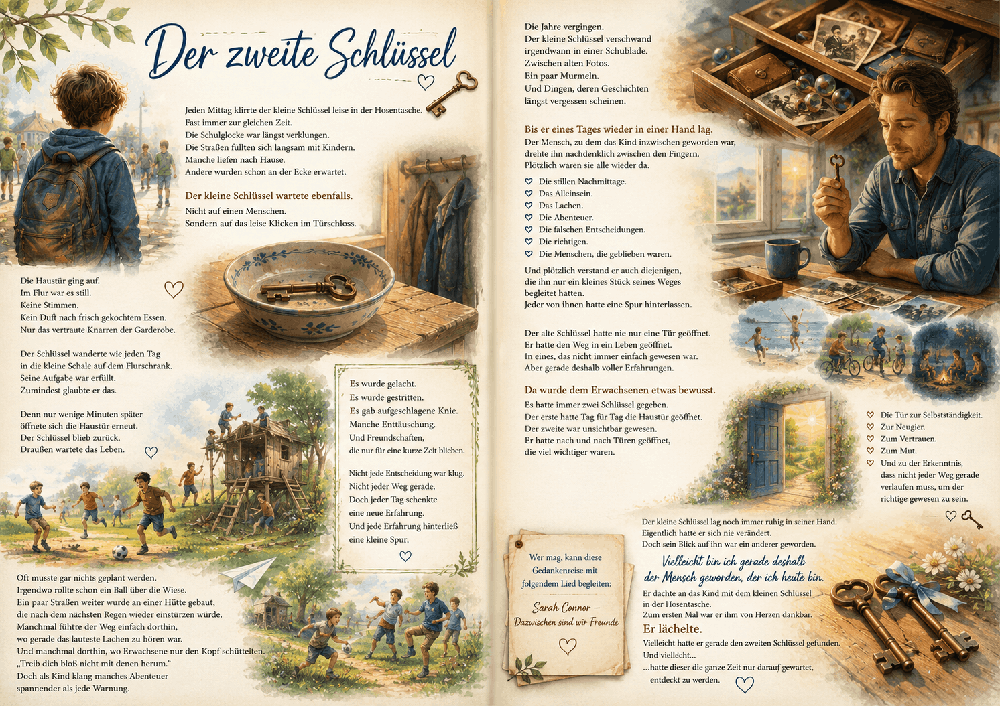

AI Website BuilderEine Gedankenreise zum Verschenken

Der zweite Schlüssel
Jeden Mittag klirrte der kleine Schlüssel leise in der Hosentasche.
Fast immer zur gleichen Zeit.
Die Schulglocke war längst verklungen.
Die Straßen füllten sich langsam mit Kindern.
Manche liefen nach Hause.
Andere wurden schon an der Ecke erwartet.
Der kleine Schlüssel wartete ebenfalls.
Nicht auf einen Menschen.
Sondern auf das leise Klicken im Türschloss.
Die Haustür ging auf.
Im Flur war es still.
Keine Stimmen.
Kein Duft nach frisch gekochtem Essen.
Nur das vertraute Knarren der Garderobe.
Der Schlüssel wanderte wie jeden Tag in die kleine Schale auf dem Flurschrank.
Seine Aufgabe war erfüllt.
Zumindest glaubte er das.
Denn nur wenige Minuten später öffnete sich die Haustür erneut.
Der Schlüssel blieb zurück.
Draußen wartete das Leben.
Oft musste gar nichts geplant werden.
Irgendwo rollte schon ein Ball über die Wiese.
Ein paar Straßen weiter wurde an einer Hütte gebaut,
die nach dem nächsten Regen wieder einstürzen würde.
Manchmal führte der Weg einfach dorthin,
wo gerade das lauteste Lachen zu hören war.
Und manchmal dorthin, wo Erwachsene nur den Kopf schüttelten.
"Treib dich bloß nicht mit denen herum."
Doch als Kind klang manches Abenteuer spannender als jede Warnung.
Es wurde gelacht.
Es wurde gestritten.
Es gab aufgeschlagene Knie.
Manche Enttäuschung.
Und Freundschaften, die nur für eine kurze Zeit blieben.
Nicht jede Entscheidung war klug.
Nicht jeder Weg gerade.
Doch jeder Tag schenkte eine neue Erfahrung.
Und jede Erfahrung hinterließ eine kleine Spur.
Die Jahre vergingen.
Der kleine Schlüssel verschwand irgendwann in einer Schublade.
Zwischen alten Fotos.
Ein paar Murmeln.
Und Dingen, deren Geschichten längst vergessen schienen.
Bis er eines Tages wieder in einer Hand lag.
Der Mensch, zu dem das Kind inzwischen geworden war,
drehte ihn nachdenklich zwischen den Fingern.
Plötzlich waren sie alle wieder da.
Die stillen Nachmittage.
Das Alleinsein.
Das Lachen.
Die Abenteuer.
Die falschen Entscheidungen.
Die richtigen.
Die Menschen, die geblieben waren.
Und plötzlich verstand er auch diejenigen,
die ihn nur ein kleines Stück seines Weges begleitet hatten.
Jeder von ihnen hatte eine Spur hinterlassen.
Der alte Schlüssel hatte nie nur eine Tür geöffnet.
Er hatte den Weg in ein Leben geöffnet.
In eines, das nicht immer einfach gewesen war.
Aber gerade deshalb voller Erfahrungen.
Da wurde dem Erwachsenen etwas bewusst.
Es hatte immer zwei Schlüssel gegeben.
Der erste hatte Tag für Tag die Haustür geöffnet.
Der zweite war unsichtbar gewesen.
Er hatte nach und nach Türen geöffnet, die viel wichtiger waren.
Die Tür zur Selbstständigkeit.
Zur Neugier.
Zum Vertrauen.
Zum Mut.
Und zu der Erkenntnis, dass nicht jeder Weg gerade verlaufen muss,
um der richtige gewesen zu sein.
Der kleine Schlüssel lag noch immer ruhig in seiner Hand.
Eigentlich hatte er sich nie verändert.
Doch sein Blick auf ihn war ein anderer geworden.
"Vielleicht bin ich gerade deshalb der Mensch geworden, der ich heute bin"
Er dachte an das Kind mit dem kleinen Schlüssel in der Hosentasche.
Zum ersten Mal war er ihm von Herzen dankbar.
Er lächelte.
Vielleicht hatte er gerade den zweiten Schlüssel gefunden.
Und vielleicht...
...hatte dieser die ganze Zeit nur darauf gewartet,
entdeckt zu werden.
🎵 Wer mag, kann diese Gedankenreise mit folgendem Lied begleiten
Sarah Connor – Dazwischen sind wir Freunde
Quelle: YouTube – Originalvideo
https://youtu.be/GF1aSp45Fwk?is=4BEnM5iUOFOZR2ZG
Manche Dinge begleiten uns viele Jahre, ohne dass wir ihre eigentliche Bedeutung erkennen.
Erst wenn wir zurückblicken, entdecken wir manchmal, dass nicht nur die schönen Momente uns geprägt haben.
Auch Herausforderungen, Umwege, Enttäuschungen und kleine Abenteuer gehören zu unserem Leben.
Diese Geschichte möchte nicht sagen, dass alles, was geschieht, gut ist.
Sie lädt vielmehr dazu ein, den eigenen Weg einmal mit etwas Abstand zu betrachten.
Vielleicht entdecken wir dabei, dass selbst Erfahrungen, die wir uns damals nie gewünscht hätten, dazu beigetragen haben, der Mensch zu werden, der wir heute sind.
Nicht, weil sie leicht waren.
Sondern weil wir aus ihnen gelernt, an ihnen gewachsen und durch sie unseren eigenen Weg gefunden haben.
Diese Gedankenreise entstand aus einem Gespräch über Kindheit, Freiheit und Erinnerungen.
Dabei wurde deutlich, wie unterschiedlich Menschen ihre frühen Jahre erleben – und wie ähnlich manche Gefühle dennoch sein können.
Aus einem kleinen Haustürschlüssel entwickelte sich nach und nach ein Sinnbild.
Zunächst öffnete er nur eine Tür.
Doch viele Jahre später wurde deutlich, dass es noch einen zweiten Schlüssel gab.
Einen, den man nicht in die Hand nehmen kann.
Den Schlüssel zu Erfahrungen.
Zu Begegnungen.
Zu Entscheidungen.
Zu all den kleinen und großen Momenten, die uns unbemerkt formen.
Vielleicht entdecken wir diesen zweiten Schlüssel erst dann, wenn wir bereit sind, unserem eigenen Weg mit Dankbarkeit zu begegnen.
Vielleicht gibt es auch in deinem Leben einen kleinen Schlüssel.
Etwas Alltägliches, das du lange Zeit kaum beachtet hast.
Eine Erinnerung.
Ein Gegenstand.
Ein Ort.
Oder einen Menschen.
Vielleicht lohnt es sich, heute einen Moment innezuhalten und zurückzublicken.
Nicht mit dem Wunsch, etwas anders zu machen.
Sondern mit der Offenheit zu erkennen, was dich auf deinem Weg begleitet und geprägt hat.
Vielleicht entdeckst auch du dabei einen zweiten Schlüssel.
Einen, der keine Türen öffnet.
Sondern den Blick auf dein eigenes Leben.
Und vielleicht entsteht dabei ganz von selbst ein leiser Gedanke:
Vielleicht bin ich gerade deshalb der Mensch geworden, der ich heute bin.
AI Website Builder